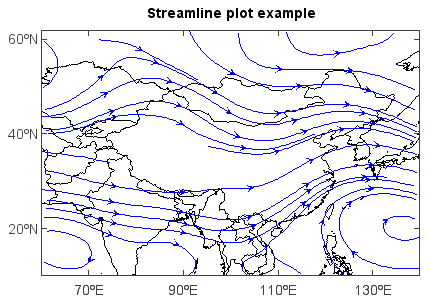

streamplotm¶
-
mipylib.plotlib.miplot.streamplotm(*args, **kwargs)¶ Plot streamline in a map.
Parameters: - x – (array_like) Optional. X coordinate array.
- y – (array_like) Optional. Y coordinate array.
- u – (array_like) U component of the arrow vectors (wind field) or wind direction.
- v – (array_like) V component of the arrow vectors (wind field) or wind speed.
- z – (array_like) Optional, 2-D z value array.
- color – (Color) Streamline color. Default is blue.
- fill_value – (float) Fill_value. Default is
-9999.0. - isuv – (boolean) Is U/V or direction/speed data array pairs. Default is True.
- density – (int) Streamline density. Default is 4.
- proj – (ProjectionInfo) Map projection of the data. Default is None.
- order – (int) Z-order of created layer for display.
Returns: (VectoryLayer) Created streamline VectoryLayer.
Example:
f = addfile('D:/Temp/GrADS/model.ctl') u = f['U'][0,'500','10:60','60:140'] v = f['V'][0,'500','10:60','60:140'] axesm() mlayer = shaperead('D:/Temp/map/country1.shp') geoshow(mlayer, edgecolor='k') layer = streamplotm(u, v) title('Streamline plot example') yticks([20,40,60])